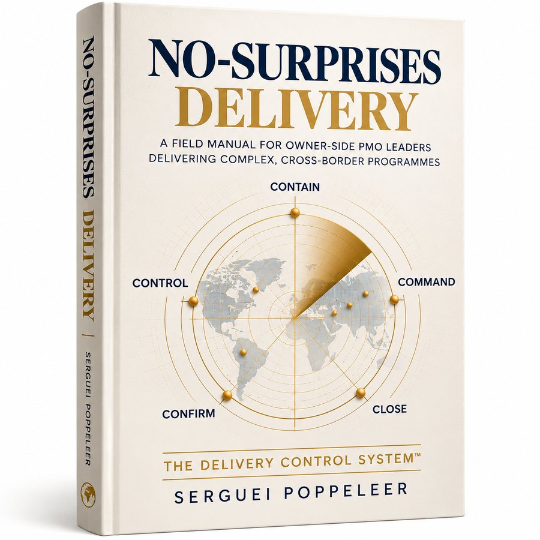

Controlled on paper. Run on WhatsApp. We close that gap on cross-border construction, EPC and energy programmes in Europe, Africa and the Gulf.
Free · 15 Yes/No questions · About 4 minutes
For PMO directors, programme owners and sponsors accountable for delivery on capital programmes of €10M–€2B.
Not sure where your programme stands? Book a Free 45-Minute Call →
Score your delivery control first.
Example action: assign owners, deadlines and escalation paths to critical open decisions.
Five levels of delivery control. One question: how early can you see and act?
Whether you’re launching, recovering, changing or scaling, the first question is whether your delivery system can support what comes next.
Is delivery slipping toward a claim?
Delivery Control Reset →Contractor? Ask ContracksChange in progressWill the change actually stick?
Programme Turnaround →Opening abroad? Ready to OpenScaling upCan we scale without breaking?
CONTROL Tower →Contractor scaling? Ask ContracksNew ventureCan this become a real business?
Delivery Score and review call →First contracts? The Contract ClerkFees are confirmed after the review call, because they depend on programme size and complexity.
One live programme, drifting. You need proof and a plan.
Know what’s wrong, what it costs and what to fix first.
10 business daysYou’ve had the review. Now it has to change.
One working delivery system, owned by your team.
6 weeksYou don’t want this again.
Earlier warnings, faster decisions and consistent portfolio oversight.
RetainerFive controls, applied in order, behind every service we offer. Each one removes a specific way programmes lose their grip.
Recovered within the original programme window. €30M+ claims position maintained.
Read the case →Reframed from positions back to project value. The relationship survived.
Read the case →French and English markets, different legal systems and customs. One operating model. Costs down around 20%.
Read the case →€700M metro programme. Commercial integrity maintained under crisis.
French- and English-speaking markets, different legal systems and customs regimes. Budget discipline and operational continuity maintained throughout.
$2.7B oil and gas infrastructure portfolio.
Sustainable aviation fuel venture. All four stages; board advisory post-investment.
Major gas transmission. Reframed from positional dispute to project value.
“Contracks brought structure and clarity to a procurement process that had become difficult to manage across suppliers and stakeholders. We improved alignment, reduced unnecessary costs, and kept delivery moving without constant firefighting.”Richard I., CEO, water project, West Africa
Founder, Contracts & Commercial
Civil engineer with over 20 years on major construction and EPC contracts in Europe, Africa and the Gulf, working for both contractors and owners. 30+ countries.
MCIArb · WorldCC · LLM Construction Law & Arbitration · MSc Civil Engineering · Executive MBA. Spoke at the Global Tourism Forum in Brussels in 2025.
Professional affiliations are held by individual specialists within our network.
We don’t publish prices, because the work depends on your programme. Fees depend on programme size and complexity, and you get the scope and fee in writing, with no obligation.
One live programme. Fixed fee, confirmed after the review call.
Fixed fee, confirmed after the review call. There is no forced retainer.
For sustained oversight, once the system is in. Terms agreed with you after the review call.
Not completely, and the Reset doesn’t pretend to. Ten days is enough to find where control has gone, prove the gaps with evidence, rank the recoverable risks and produce a recovery plan. The deeper fix is the Turnaround.
Access to the core documents, the current plan, the decision log or equivalent, selected vendor dates, and a few focused interviews. Delivery doesn’t stop.
Then you turn what people feel into evidence leaders can act on. Many PMO teams know a programme is drifting, but can’t prove where or sequence the recovery.
Run the plan yourself, ask us to support a Turnaround, or retain us for cadence and control. There is no forced retainer.
Owners. PMO Directors, programme owners, sponsors and executives accountable for delivery. Contractors should look at Ask Contracks.
Limited to two Reset engagements a month.
Tell us about you and your programme. We read every request and contact you to book your call. No documents needed.
Not ready to talk? Get my Delivery Score — free →
What happens after you bookA named senior contract manager on a monthly fee. Your contract team, without the hiring.
Visit Ask Contracks →For companies opening abroadProject management support for offices, shops and showrooms in new countries.
Visit Ready to Open →For anyone who reads contractsAI contract review. In private beta, with a free sample to try. Not legal advice.
Visit The Contract Clerk →
A field manual for owner-side PMO leaders delivering complex, cross-border programmes. Five disciplines. One delivery control system.
Join the waitlist →